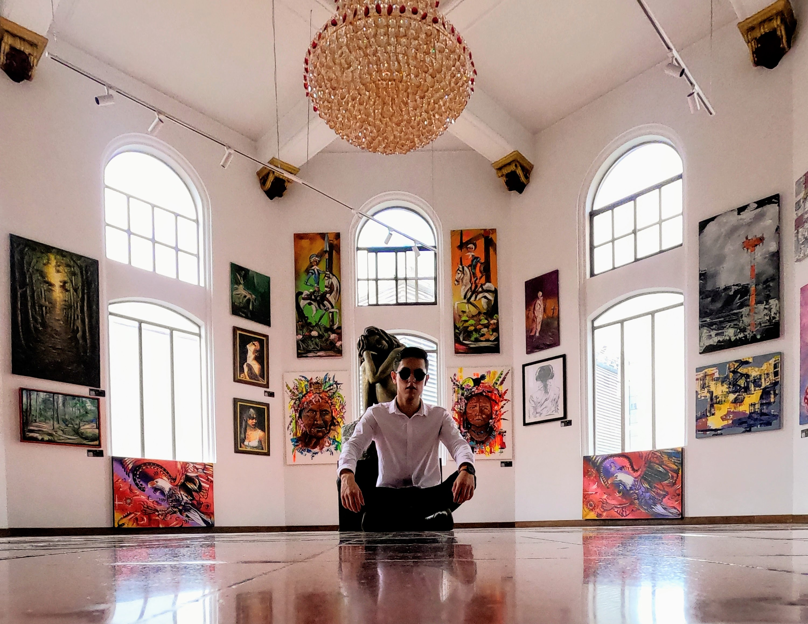

<div class="main">
  <div class="self_container">
    <section class="self_hero">
      
      <div class="self_overlay">
        <h1 class="self_title caslon">Felipe </h1>
        <h2 class="self_subtitle pinyon-script">As a Person</h2>
      </div>
    </section>
    
    <section class="self_about">
      <h2 class="self_heading">ABOUT ME</h2>
      <p class="self_intro">Hello! I’m a portrait photographer. <br> I capture emotion, identity, and personality in every frame.</p>
    </section>
    
    <section class="self_gallery">
      <div class="self_grid">
        
        
        
        
        
        
        <p class="self_quote">My goal is to portray more than faces — I aim to reveal stories, souls, and subtle truths.</p>
      </div>
    </section>
  </div>
</div>
